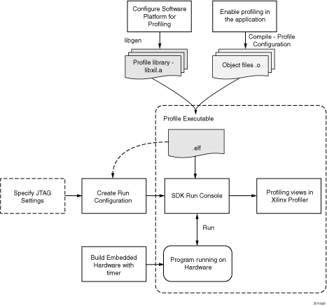

The execution flow of the program is altered so that gprof can obtain
data. Consequently, this method of profiling is considered “software-intrusive”.
The program flow is altered in two ways:
- To obtain histogram data, the program is periodically interrupted to
obtain a sample of its program counter location. This user-defined interval
is usually measured in milliseconds. The program counter location helps
identify which function was being executed at that particular sample.
Taking multiple samples over a long interval of a few seconds helps identify
which functions execute for the longest time in the program.
- To obtain the call graph information, the compiler annotates every
function call to store the caller and callee information in a data structure.
The profiling workflow is described in the following diagram:
